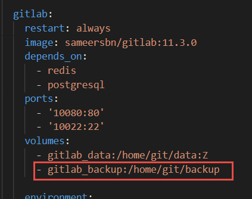
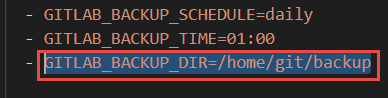
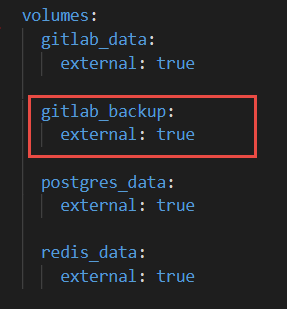
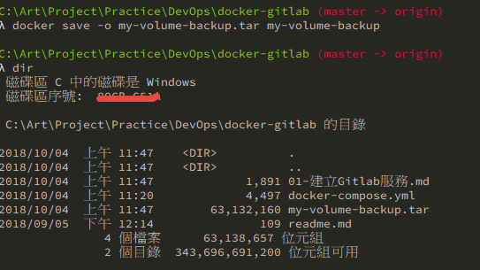
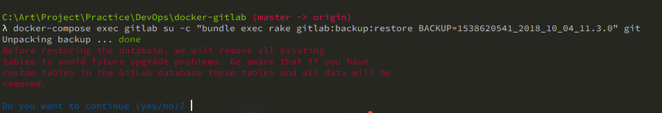
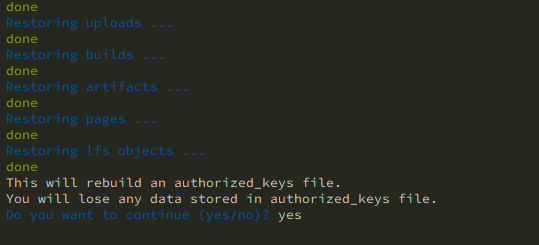
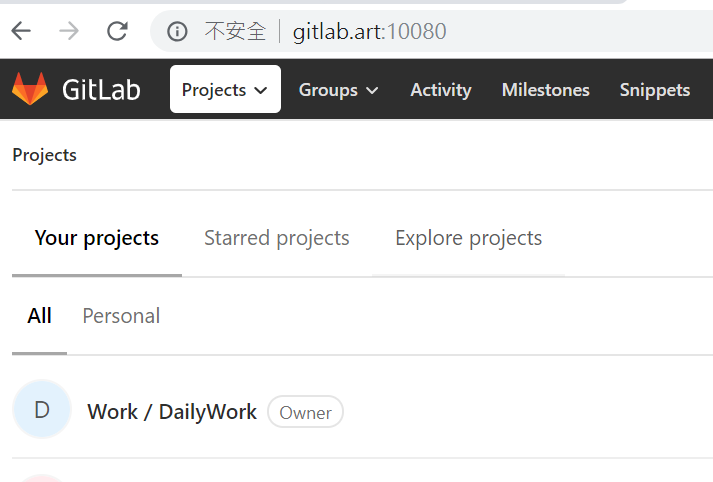
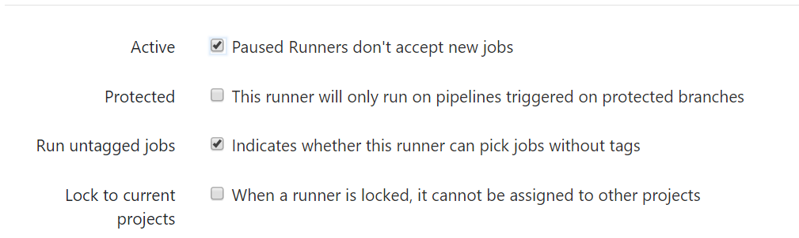

在 Windows 環境使用 GitLab Docker 安裝的備份、還原過程記錄
上次的 docker volume 備份、還原，其實就是為了要將 local 建立起來的 GitLab 服務做備份，我採用的 GitLab Images 是這篇文章中介紹的 sameersbn 所製作的 docker image，實際用了之後，真的非常的簡易就能夠建好自己的 GitLab，而且真的更新很快，文件也詳細，推薦給還不熟悉的人參考參考，那就直接進入主題吧
先送上文章內用到的 docker-compose.yml。傳送門：GitHub
建立備份所需的 Docker Volume
首先，我參考文件另外建立了一個 Docker Volume 用來將未來產生的備份檔案儲存起來，並且透過文件中提到的指定備份路徑設定 Docker Volume



接著直接透過指令將 GitLab 架起來
1
2
3
4
5
6
7
8
| # 建立 Volume
docker volume create gitlab_data
docker volume create gitlab_backup
docker volume create postgres_data
docker volume create redis_data
# 建立 Gitlab 服務
docker-compose up
|
備份 GitLab
文件中有提到備份的部分，需要先將 Gitlab 的 Container 給 stop、rm 掉，接著執行 GitLab 提供的備份指令，但是在我的電腦備份時每次連線到 Repository 的時候都會出現 Connect Error 導致備份失敗，測試結果是只要有 Repository 就會失敗，如果我使用 GitLab 服務先註冊使用者在來備份就沒事情，真奇怪，後來有在這邊找到解決方案，直接貼指令
1
2
3
4
5
6
7
8
9
10
11
12
13
14
15
16
17
18
19
| # 失敗的備份指令
docker-compose run --rm gitlab app:rake gitlab:backup:create
# -----------------------------------------------------------
# Create Backup
docker-compose exec gitlab su -c "bundle exec rake gitlab:backup:create" git
# Restore Backup
docker-compose exec gitlab supervisorctl stop unicorn
docker-compose exec gitlab supervisorctl stop sidekiq
# 列出有哪些備份可還原
docker-compose exec gitlab su -c "bundle exec rake gitlab:backup:restore" git
# 指定 TimeStamp 還原
docker-compose exec gitlab su -c "bundle exec rake gitlab:backup:restore BACKUP=1538620541_2018_10_04_11.3.0" git
docker-compose exec gitlab supervisorctl start sidekiq
docker-compose exec gitlab supervisorctl start unicorn
|
因為我的環境是 windows，所以用雙引號將指令包住
喔，有一點要特別提醒一下，用哪一版本做的備份檔案，就只能還原在該版本的 Container 底下
備份為實體檔案
配合上一篇的如何備份還原 Docker Volume，終於可以將備份檔案收去別的地方放了。
1
2
3
4
5
6
7
8
9
10
11
12
13
14
| # 建立 container 用來取得 gitlab_backup volume 的備份檔案
docker run -d --name mybackup -v gitlab_backup:/volume alpine ping 127.0.0.1
# 使用 tar 壓縮整個 volume 目錄
docker exec -it mybackup tar -cjf /data.tar.bz2 -C /volume ./
# 用 docker inspect或者是 docker ps 查詢目前 container 的 Id
docker inspect --format="{{.Id}}" mybackup
# 透過 container Id 將 container 打包成一個新的images：my-volume-backup
docker commit -p e0a4366ae143 my-volume-backup
# 將images導出為實體檔案
docker save -o my-volume-backup.tar my-volume-backup
|

測試還原 GitLab 服務
為了測試需要，所以我把 GitLab Container 、Volume 砍掉，全部重來再重新建立一次服務
1
2
3
4
5
6
7
8
9
10
11
12
13
14
| # 建立 Volume
docker volume create gitlab_data
docker volume create gitlab_backup
docker volume create postgres_data
docker volume create redis_data
# 將 Gitlab 服務架起來
docker-compose up
# 將實體檔案還原為 Image
docker load -i my-volume-backup.tar
# 將 Image 裡面的檔案解壓縮到 Docker Volume
docker run --rm -v gitlab_backup:/volume my-volume-backup sh -c "rm -rf /volume/* /volume/..?* /volume/.[!.]* ; tar -C /volume/ -xjf /data.tar.bz2 ;"
|
還原 GitLab 服務
1
2
3
4
5
6
7
8
9
10
11
12
13
| # 把腳本建立的 GitLab 名稱改名為 gitlab (這一步省略的話接下來要自己替換掉 container name)
docker rename docker-gitlab_gitlab_1 gitlab
# 記得這個時候要確認 GitLab 是 start 的，否則會出現錯誤訊息說找不到 container
# 先確認有哪些備份檔可還原
docker-compose exec gitlab su -c "bundle exec rake gitlab:backup:restore" git
# 指定 TimeStamp 還原
docker-compose exec gitlab supervisorctl stop unicorn
docker-compose exec gitlab supervisorctl stop sidekiq
docker-compose exec gitlab su -c "bundle exec rake gitlab:backup:restore BACKUP=1538620541_2018_10_04_11.3.0" git
docker-compose exec gitlab supervisorctl start sidekiq
docker-compose exec gitlab supervisorctl start unicorn
|

還原過程會再要你確認是不是真的要還原

這邊如果選擇 no，那就不會幫你清掉 authorized_keys file，選擇 yes 就清掉而已，後面就是清除一些暫存檔案、目錄而已
還原完畢記得要把 unicorn、sidekiq 重新 start

我的 GitLab 又回來囉~~
加碼 GitLab Runner
都裝了 GitLab 不接著裝 Runner 始終是覺得少了一塊拼圖，那就寫一下重點吧。
- 建立一個目錄用來存放 Runner 的檔案，如
C:\GitLab-Runner - 依據作業系統環境下載 x86 或amd64 版本的 Runner 檔案，放置於剛才的目錄中，並重新命名為
gitlab-runner.exe - 使用管理員權限執行 command line，並輸入指令
gitlab-runner.exe register註冊 Runner - 依照畫面指示，順序輸入自己架設的 GitLab 網址及後台取得的 Token，註冊部分的細節請參考官方文件
- 安裝服務並啟動
gitlab-runner install、gitlab-runner start
設定 GitLab Runner
- 進入 GitLab 後台管理 Runner，若成功建立 Runner，用管理員帳號登入後可以在後台看到適才註冊的 Runner 已經出現在這邊，記得將 Runner 的狀態設置好

- 專案設置加入 Gitlab CI 設定檔，於專案根目錄下新增
.gitlab-ci.yml檔案，內容請參考下列範例自行修改調整，第二行請自行調整專案名稱
1
2
3
4
5
6
7
8
9
10
11
12
13
14
15
16
17
18
19
20
21
22
23
24
| variables:
PROJECT_NAME: "TaskProject"
before_script:
- echo "starting build for %PROJECT_NAME%"
- echo "Restoring NuGet Packages..."
- nuget restore "%PROJECT_NAME%.sln"
stages:
- build
- test
build:
stage: build
script:
- echo "Release build..."
- msbuild /consoleloggerparameters:ErrorsOnly /maxcpucount /nologo /property:Configuration=Release /verbosity:quiet %PROJECT_NAME%.sln
artifacts:
untracked: true
test:
stage: test
script:
- echo "starting tests"
- cd %PROJECT_NAME%Tests/bin/Release
- vstest.console %PROJECT_NAME%Tests.dll
dependencies:
- build
|
這邊示範的只是最簡單基礎的 Runner 設定，所以關於 Runner 服務的執行權限設定、自動化腳本內使用到的 MSBuild、VSTest.Console、Nuget 都要先自行安裝，此處就不細談。
關於 GitLab 與 Runner 之間的關係其實就跟一般的 Git 服務配上 Jenkins 概念一樣，所以要配置 Runner 當然也有很多方法，因為要滿足不同的專案建置需求，跑 CSharp、Java、Andriod、iOS 等等，都有可能有不同的建置環境跟需求需要配置、甚至是專門用來半夜跑整合測試的也許要用比較好的機器……之類的，這部分就等用到的時後再研究囉